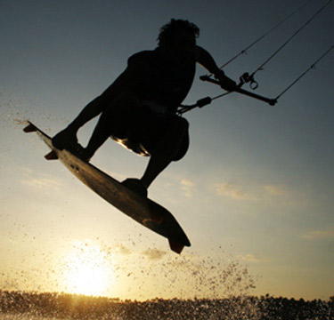

Een beetje over mij.
Introductie
Ik ben Randy, een ICTer uit Hoogwoud. Sinds 2012 ben ik bezig met de opleiding Forensic ICT, nadat ik de opleiding Particulier Digitaal Onderzoeker heb afgerond. Met deze opleidingen leer ik een hoop nieuwe tricks die ik graag inzet om anderen te helpen, zoals Data Recovery en Webdesign.
Hobby's
Kitesurfen & flyboarden
Kitesurfen en flyboarden zijn mijn passie. Ik vind kitesurfen echt te gek, en ben dan ook vaak op het water te vinden. Mijn favoriete spots zijn IJmuiden en Wijk aan Zee, waar we in de winter aan Flyboarden doen.
Flyboarden lijkt enorm op kitesurfen. Het is eigenlijk met een oversized skateboard over het strand heen racen.
Webdesign & app-development
Webdesign is een interessante uitdaging
voor mij waar ik al enige tijd geleden mee in aanraking ben gekomen. Ik heb eerst simpele websites gemaakt voor school,
daarna een uitgebreide website met mijn stagebegeleider en ben nu op het punt waarop ik mijn eigen websites professioneel
af kan leveren, met eventueel en CMS systeem om het te onderhouden.
Appdevelopment is een uitdaging waar ik op het HBO mee in aanraking ben gekomen, mede dankzij de programmeer lessen. Apps en websites
zijn anders in de zin dat een website is gemaakt om te bekijken, waardoor het makkelijker is om een mooie website te maken dan een mooie
app. Ik heb op dit moment nog geen apps gelanceerd, maar wel websites! Bekijk mijn portfolio om te zien wat ik allemaal heb gemaakt.